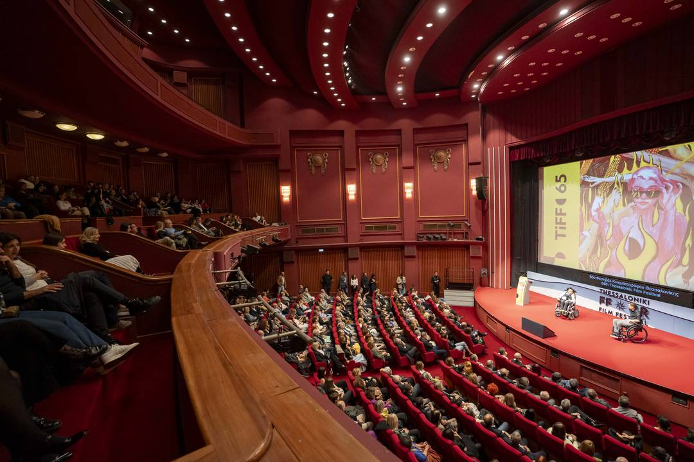
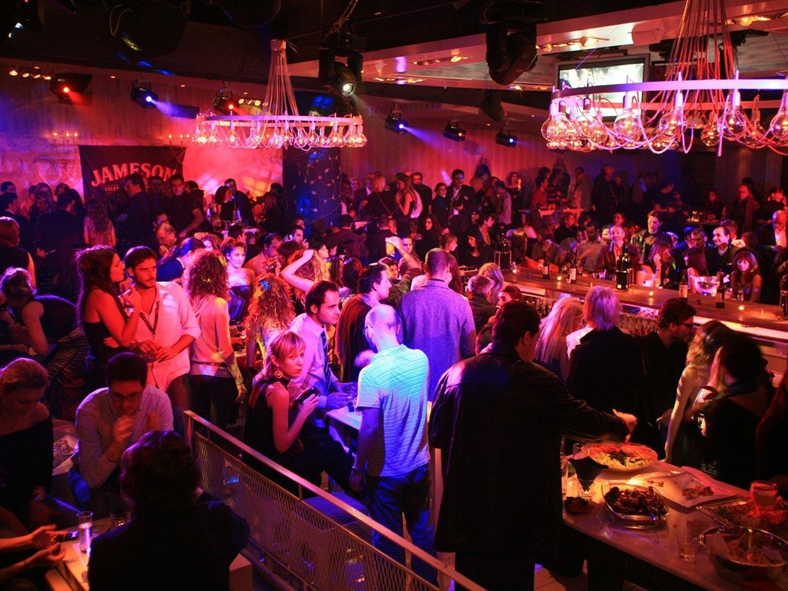
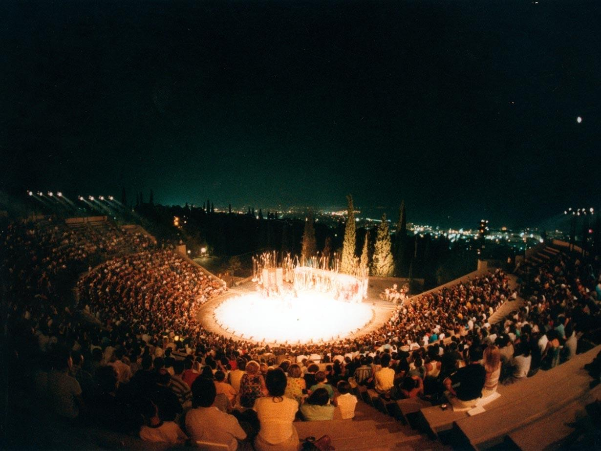
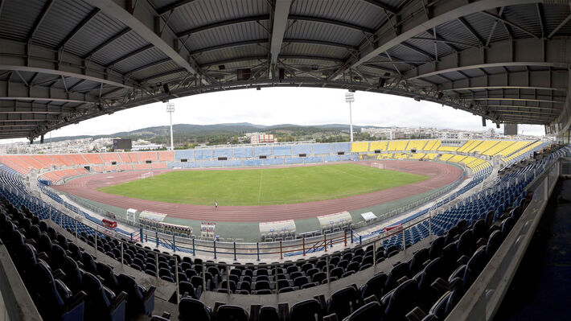

Move your mouse over a photo to find out more.
Film Festival
Every November the city fills with film lovers for the Thessaloniki International Film Festival, the most important in Greece.
Screenings take place at the historic Olympion on Aristotelous Square and in the old warehouses of the port.

Film FestivalNightlife
Thessaloniki is famous for its nights out. Start in Ladadika, the old market district next to the port, full of tavernas and bars.
Later, move to the bars around Valaoritou Street. The city really wakes up after midnight!

NightlifeLive Music
From rebetiko in small ouzeri to big concerts, you can hear live music almost every night.
For classical music and big shows, check the programme of the Thessaloniki Concert Hall on the waterfront.
 Live Music
Live Music
Theatre
In winter, see a play by the National Theatre of Northern Greece.
In summer, watch a show under the stars at the open-air Theatre of the Earth or the Forest Theatre.

TheatreSports
Football is a passion here. Catch a match of PAOK at Toumba Stadium or Aris at Kleanthis Vikelidis Stadium.
The atmosphere in the stands is an experience in itself, even if you are not a football fan.

Sports